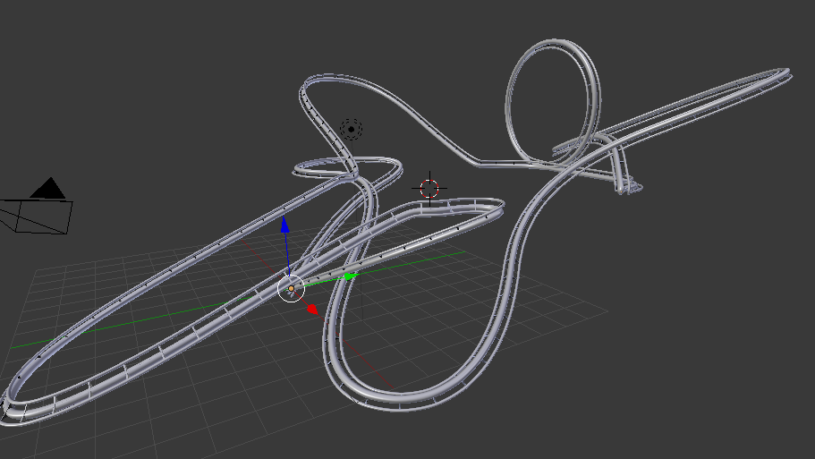
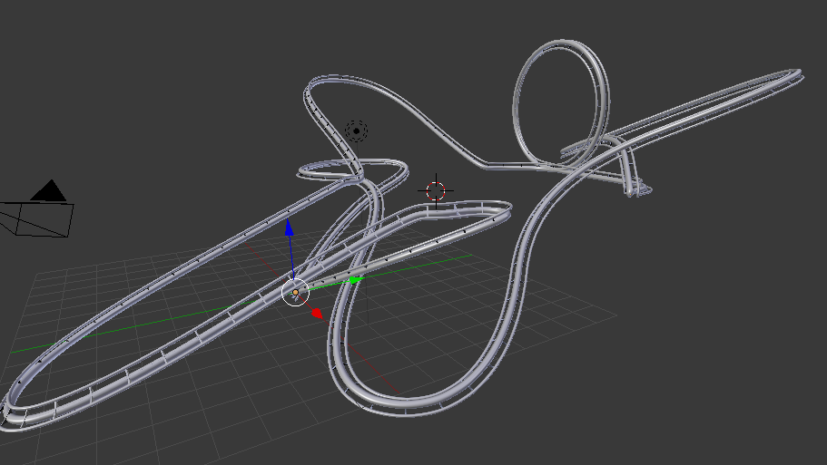
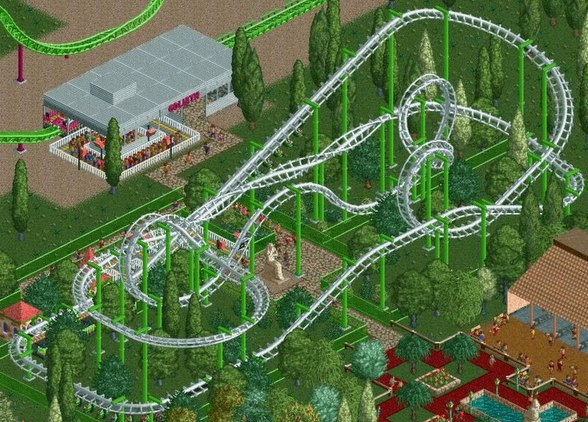
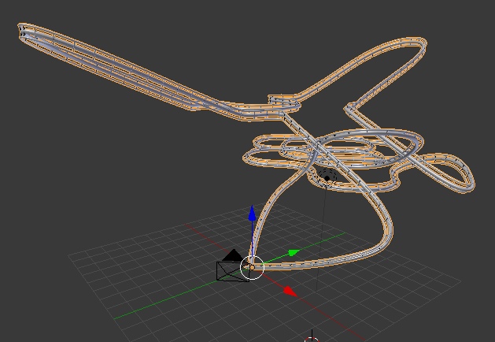
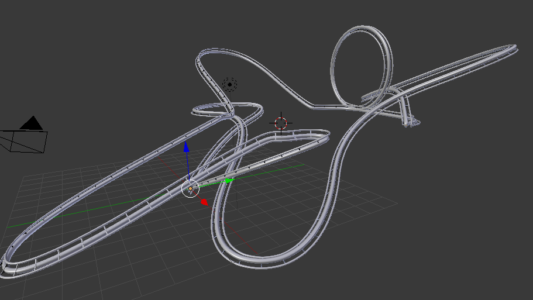

Third example, with 2 iterations. With looping !  Fourth example, as a video, to have better 3d perception of the tracks. 3 iterations.
Third example, with 2 iterations. With looping !  Fourth example, as a video, to have better 3d perception of the tracks. 3 iterations. 
(Image from RollerCoaster Tycoon 2)
Roller coaster built with stochastic L-systems. The idea is to have a functional procedurally generated roller coaster, using predefined rules and symbols. We chose the algorithm to be stochastic so that we can have some variations. A path will be generated that goes through a set of generated 3D points and a rail segment will be repeated and curved along the path to be the final track.
This is the updated proposal after discussion with one teaching assistant and the feedback that said we should rather use L-Systems instead of the wave function collapse algorithm.
The minimum deliverable for a passing grade (4.0) would be fully connected and realistic roller coaster. “Realistic” means a track that is close to a real one and that could be realized. I.e the roller coaster loops and have somewhat realistic curves.
We are now able to generate a simple procedural Roller Coaster that loops. Our L-System rules do not break this loop and we could run our algorithm to an arbitrary large number of iterations without breaking this property.
We have a simple interface in Blender that allows the user to select the number of iterations that the L-System will compute. We are currently experimenting on new rules that will make the Roller Coaster less dense on a bigger number of iterations and maybe have a less consistent “style”.
First example, with 3 iterations.  Second example, with 3 iterations. Third example, with 2 iterations. With looping !  Fourth example, as a video, to have better 3d perception of the tracks. 3 iterations.
Blender + readings and understanding of external ressources.Blender.Blender to create the track, and to render the final scene.
Python to code the algorithm for Blender.
Assignment 8 of the course.
http://pcgbook.com/ https://ieeexplore.ieee.org/document/8627334 https://docs.blender.org/api/2.79/